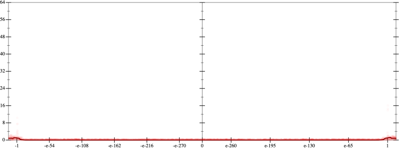
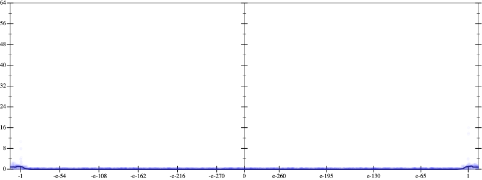
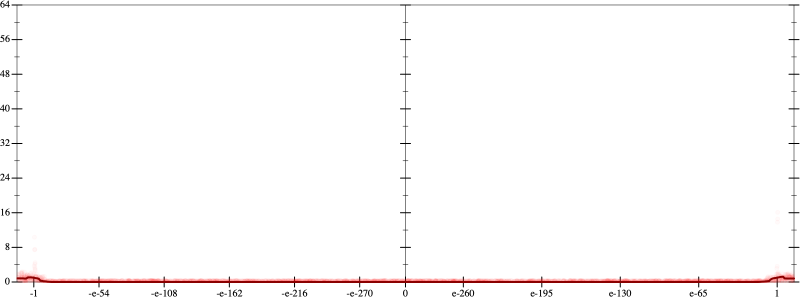
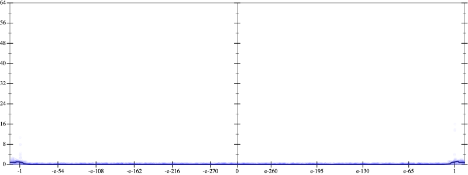
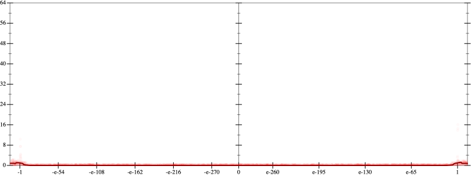
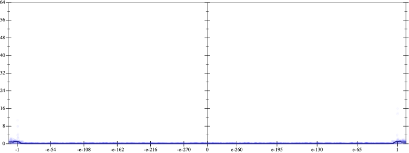

Error
 
Bits error versus x
Bits error versus x
Results
Initial program 0.1
Time bar (total: 42.9s)Debug log
herbie shell --seed 1000236972
(FPCore (x)
:name "15"
:pre (and (>= x -1e+14) (<= x 1e+14))
(+ (+ (+ (+ (+ (+ (+ (* -3.14209 x) (* 124.63623 (* (* x x) x))) (* -1420.853027 (* (* (* (* x x) x) x) x))) (* 7104.265137 (* (* (* (* (* (* x x) x) x) x) x) x))) (* -18155.344238 (* (* (* (* (* (* (* (* x x) x) x) x) x) x) x) x))) (* 24757.287598 (* (* (* (* (* (* (* (* (* (* x x) x) x) x) x) x) x) x) x) x))) (* -17139.660645 (* (* (* (* (* (* (* (* (* (* (* (* x x) x) x) x) x) x) x) x) x) x) x) x))) (* 4733.811035 (* (* (* (* (* (* (* (* (* (* (* (* (* (* x x) x) x) x) x) x) x) x) x) x) x) x) x) x))))